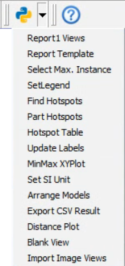
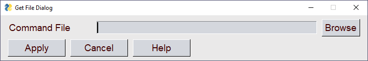
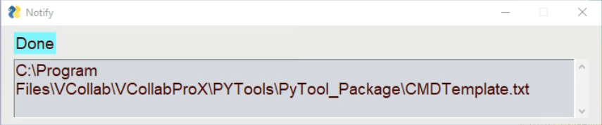
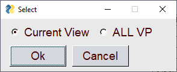
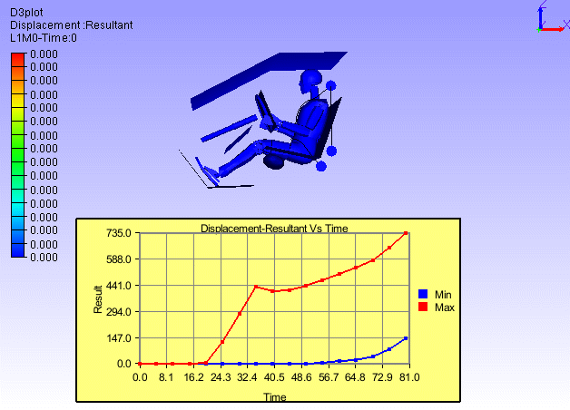
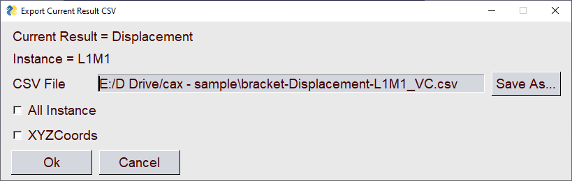
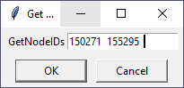
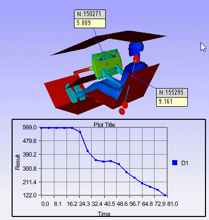
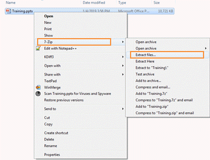

Py Tools¶
VCollab provides PY_Tools, a custom tools menu which comes with the installer. It contains a set of utility functions which are associated with a set of python scripts. The description of association between each function name and corresponding Python script is to be defined in a specific format in a file “<VCOLLAB_DIR>VCollabPro64VCollabStdPyTools.csv”. The following set of functions are provided in this release.
#VCollab_Python_INTERFACE, GUI Mode=0, PY_Tools,Images/py_tools.png Report Views,%VCOLLAB_DIR%VCollabProXPYToolsReportViews.py Report Template,%VCOLLAB_DIR%VCollabProXPYToolsCMDTemplate_Run.py Select Max. Instance,%VCOLLAB_DIR%VCollabProXPYToolsSelectMaxInst.py SetLegend,%VCOLLAB_DIR%VCollabProXPYToolsSetLegend.py Find Hotspots,%VCOLLAB_DIR%VCollabProXPYToolsFindHotspots.py Part Hotspots,%VCOLLAB_DIR%VCollabProXPYToolsPartHotspots.py Hotspot Table,%VCOLLAB_DIR%VCollabProXPYToolsHotspotTable.py Update Labels,%VCOLLAB_DIR%VCollabProXPYToolsUpdate_Labels.py MinMax XYPlot,%VCOLLAB_DIR%VCollabProXPYToolsMinMaxXYPlot.py Set SI Unit,%VCOLLAB_DIR%VCollabProXPYToolssetUNITS_SI.py Arrange Models,%VCOLLAB_DIR%VCollabProXPYToolsArrangeModels.py Export CSV Result,%VCOLLAB_DIR%VCollabProXPYToolsExportAllinstance2CSV.py Distance Plot,%VCOLLAB_DIR%VCollabProXPYToolsTrackDistPlot.py Blank View,%VCOLLAB_DIR%VCollabProXPYToolsBlankview.py View2Background,%VCOLLAB_DIR%VCollabProXPYToolsCreate_Background.py Import Image Views,%VCOLLAB_DIR%VCollabProXPYToolsImportImageViews.py
User Interface

Report Views
This function (script) will create a set of Viewpoints based on analysis type. For loadcase analysis (Linear/Transient) it will create Maximum Instance hotspot views for each result. For Modal Analysis, it will create first 10 modal animation views with a Frequency Table view.


Report Template
In VCollab, a live 3D report can be created by defining a set of live slides or viewpoints. VCollab Python API can be used to create such live slides automatically. To simplify report automation task, a list of generic commands are developed using python. A list of such commands (‘Report Template’ ) can be defined in a text file and run using ” PyTools –>Report Template” menu
The file’Template_CMDList.pdf’, located in %VCOLLAB_DIR%VCollabProXPyToolsPyTool_Package, gives a brief description for the supported commands. User can create their own template using this commands in a text file and run through this interface.

Just click ‘Apply’ button without providing command file, to run default template command file. A message box pops up after the command file is executed.

Select Max Instance
This function will display ‘Maximum Value Instance’ for the current result (and derived type).
Set Legend
This function helps user to set pre-min & pre-max legend values, precision and number of colors quickly. This command pops up the following user interface,

Find Hotspots
This function will display a Python TK Dialog box (as shown below) for the current displayed result and instance. In this dialog box user can specify,
Legend Max, Min values to highlight specific range of values.
Option to filter parts and associated limit
Top/Bottom hotspot option (if Top Hotspot check box is check then Top option else Bottom option)
Number of hotspots
When Apply button is clicked, hotspots are displayed based on user selected probe settings. If filter parts option is selected then the parts with result value outside the filter limits will be hidden (filter limits Top or Bottom is set based on the hotspot option)

Part Hotspots
This function computes hotspots for each individual part according to hotspot settings.
Hotspot Table
This function creates a 2D table with Node ID, Position and result Value for the probed labels.
Note: Use similar probe types (Derived or All result). It will not work for multi-model comparison tables.

Update Labels
This function updates all labels with latest label settings. User can update all viewpoints label also.

MinMax XYPlot
This script will create MinMax XY Plot for current displayed result.

SetSI_Unit
This function will set Units (SI) for all common result types (Results Option Dialog).

Arrange Models
This function arranges all merged models evenly displaced rows.


Export CSV Result
This function exports current result instance into a csv file. User can enter output file folder path using the popup dialog. And user can check ‘All Instances’ option to write all instances, ‘XYZCoord’ option to write nodal coordinates data.

Blank View
This function clears the viewer screen with white background in a single click. i.e. It hides all the objects in the viewport.
Distance Plot
This function helps to find or trace the distance between any two nodes among all time steps. Clicking this item, pops up a input dialog and prompts for any two node IDs.
Input dialog takes first two node ids from probe tables if they are available. Otherwise user has to enter the node IDs manually in the input dialog box.

On clicking OK in the dialog, creates an XYPlot with a single curve which represents the distance between given nodes.

Import Image Views
This function will ask for the image folder and add ‘background image viewpoints’ for each image in the folder. This function can be used to import all the slides from a PowerPoint (PPTx) as 2D viewpoints.
Export PowerPoint slides as images (png/jpeg) into a folder.

or Create images from native post processor or CAD tools.
Select this function. Following Folder selection dialog will appear
It will add viewpoints for all images in the selected folder.


Note:
This ‘PY_Tools’ is for common utility functions (may be for company level customization). For user level customization, user can create same kind of csv file with user defined menu item names and corresponding scripts. Then copy the created csv and script files to the “%APPDATA%VCollab". VCollab looks for any csv file with the proper header and creates the menu in the next application session.